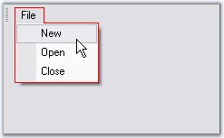

UpdateUI event is handled when the mouse moves over the bar item or before it gets shown in a dropdown.
 Note: This event will be handled only
when BarManager.UpdateUIMFCStyle property or BarItem.UpdateUIOnAppIdle is
enabled. These properties decides whether to handle this event or not.
Note: This event will be handled only
when BarManager.UpdateUIMFCStyle property or BarItem.UpdateUIOnAppIdle is
enabled. These properties decides whether to handle this event or not.
|
[C#]
//Sets the dropdown border color before it is pulled down private void barItem1_UpdateUI(object sender, System.EventArgs e) { MenuColors.DropDownBorderColor = Color.Red; } |
|
[VB.NET]
'Sets the dropdown border color before it is pulled down Private Sub barItem1_UpdateUI(ByVal sender As Object, ByVal e As System.EventArgs) MenuColors.DropDownBorderColor = Color.Red End Sub |

Figure 850: DropDownBorderColor set by handling UpdateUI Event
See Also
UpdateUIMFCStyle and UpdateUIOnAppIdle properties in UI Command Update Patterns topic.